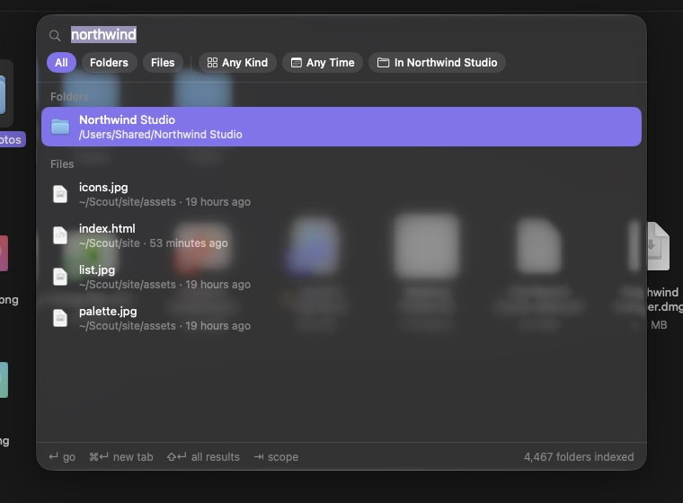

Fewer clicks to everything.
List or icons, a live preview and every detail at a glance.
Press ⌥ Space in any app and type a few letters.

List or icons, a live preview and every detail at a glance.
Scout finds what you can free up. Nothing moves until you say so.